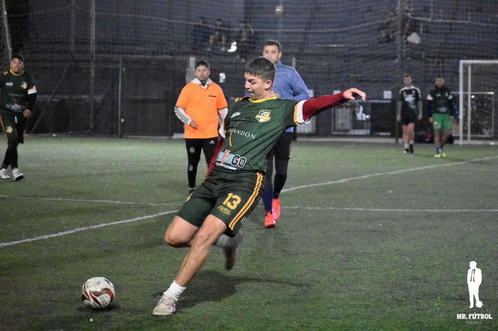
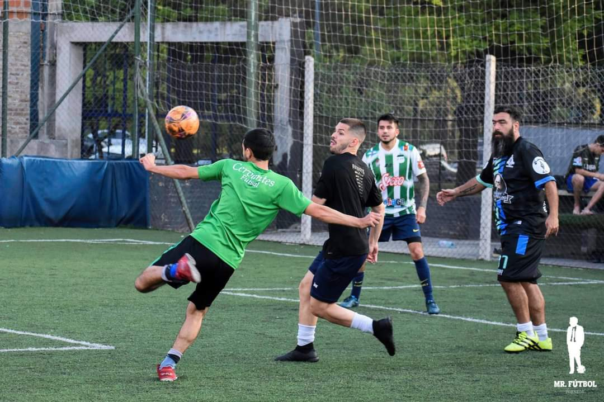
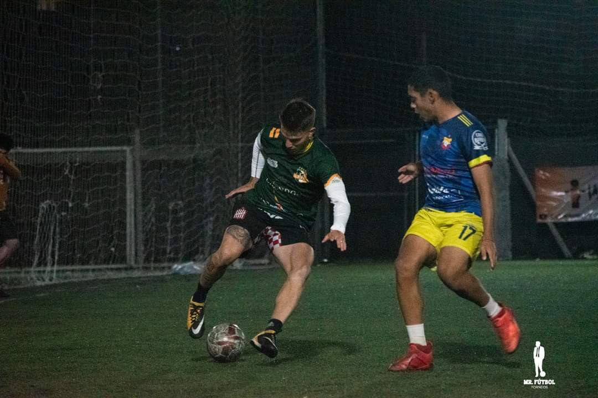
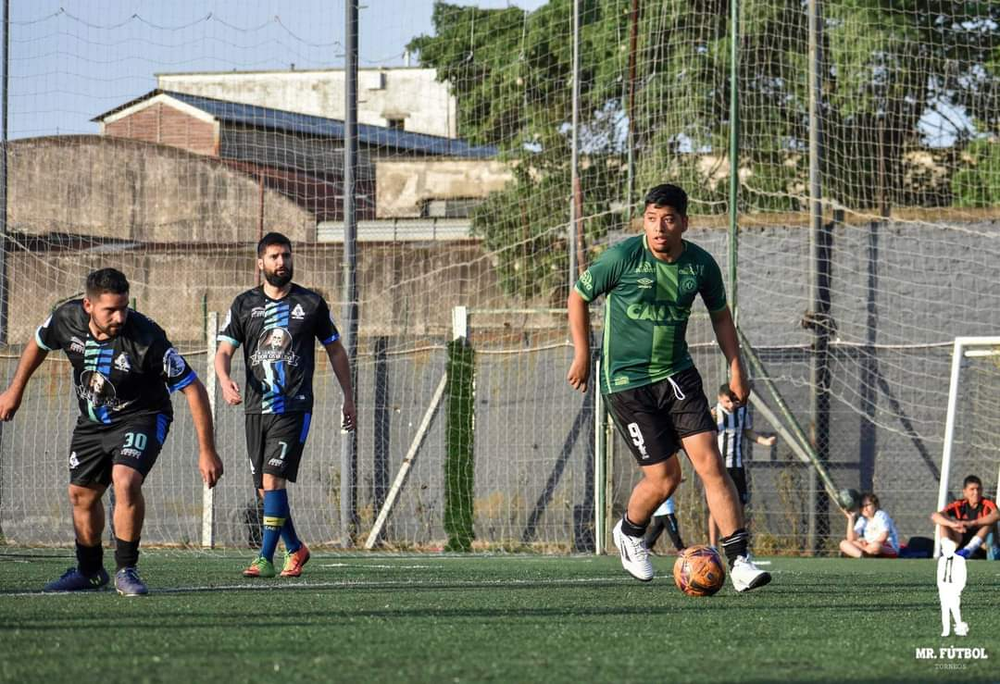
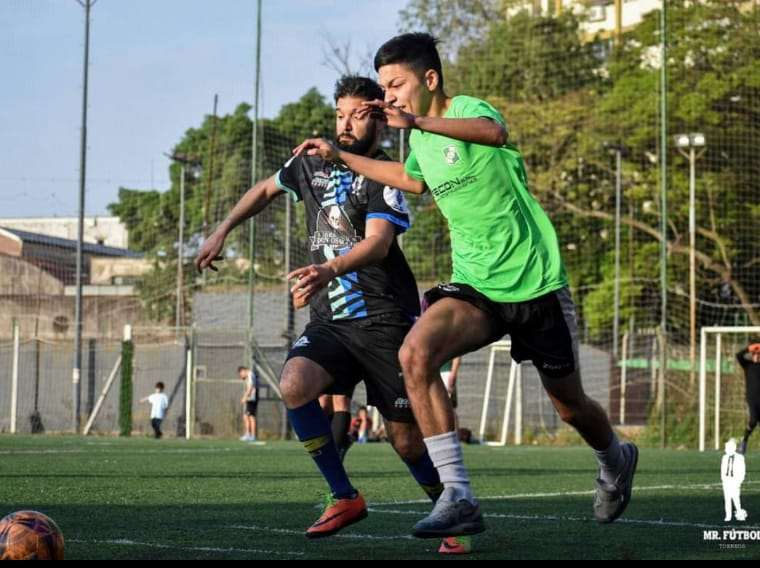
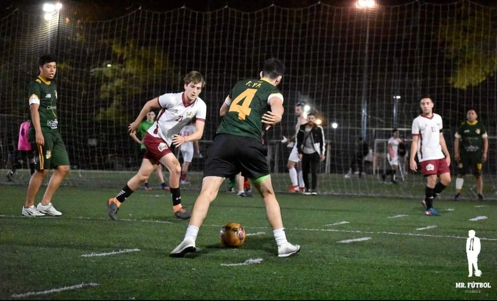

Estadistica
Pocho

- categoria: 2001(Edad:22)
-
posicion:futbol 5 (delantero) cancha de 7 (extremo) cancha
de 11 (central)
-
ventajas: buena pegada y retension de pelota
- desventajas:
-
poco recorrido de campo y se aburre rapido(empieza a hacer
boludeces)
Pulga

- categoria: 1996(Edad:26)
-
posicion: futbol 5 (delantero) futbol 7(delantero o sd)
futbol 11 (extremo dr/iz)
-
ventajas: agilidad,velocidad,actuacion y actitud ganadora
- desventajas
-
fisico muy delgado(papelito) se le pelan los cables y no
para de gritar
Purita

- categoria: 1997(Edad 27)
-
posicion: futbol 5(defensa ofensivo) futbol 7(puntero/der o
volate/der) futbol 11(lateral derecho)
-
ventajas: estado fisico,buen posicionamiento,recorrido,gran
velocidad y a veces tiene cositas
- desventajas:
-
se aburre rapido(hermano del pocho) tira facha al pedo
El Negro

- categoria: 1996(Edad:27)
-
posicion: futbol 5 (defensor o armador) futbol 7(medio
campista) futbol 11( medio campista armador)
-
ventajas: buen posicionamiento,retencion de pelota,uñaso y
muy tactico
- desventajas
-
lentitud,nula explisividad y ego riquelmiano
El Guara

- categoria: 2001(Edad:22)
-
Posicion: Futbol 5: Defensa ofensivo. Ftubol 7 (Lateral
Derecho) Futbol 11 (Lateral derecho)
-
Ventajas: -Agilidad -Juega roto. -Ta rapido.
- Desventajas:
-
Te cree lo que le digas. (Quimica con Yamix). Es hermano del
Negro. El Negro dice que es tarado.
El Yamix

- categoria: 1993(Edad:29)
-
posicion: futbol 5 (Defensa Ofensitvo) Futbol 7 (lateral
izquierdo o volatente) Futbol 11 (lateral izquierdo )
-
ventajas: - Caballito de batalla. - Brinda seguridad a la
defensa. - Zurda fuerte y buena pegada. - intensidad en
marcaje.
- desventajas:
-
Propenzo a lesiones. Se aburre y emnpieza a hacer
boludeces.